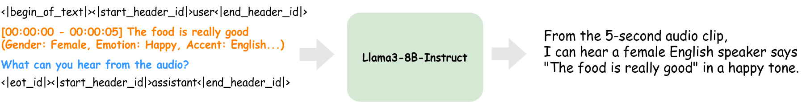

Stage 1: Dataset Consturction
In our dataset construction process, we first extract and format all textual attributes from the speech into
a structured "seed transcript." This seed transcript is then combined with the prompt "What can you hear from
the audio?" and fed into Llama3. The response generated by Llama3 becomes our training
target for the end-to-end speech language model.
There are 12 attributes, including gender, age, accent, emotion, pitch, volume, speaking speed, SNR level,
C50 value, duration, intent, and spoken text.
